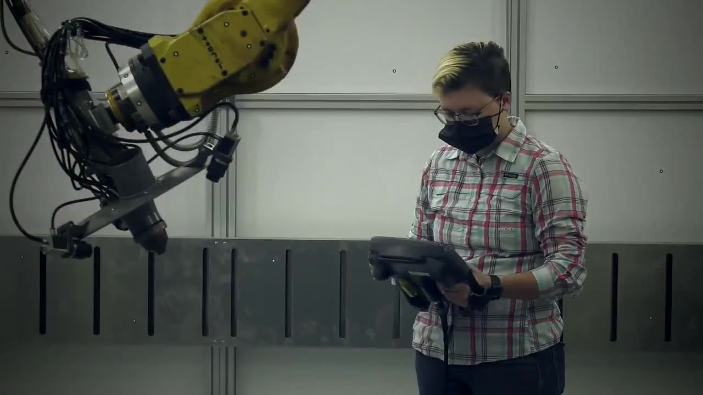

01Design reasoning
Forge
Turns requirements into machine designs, and decides what to change next.

Three engines run one loop. Forge designs, Spark checks the physics in seconds, and Anvil tests the design in full CFD. Here is how they work together, how they are checked, and how they learn.
Turns requirements into machine designs, and decides what to change next.
Predicts how any design will perform in seconds, with an error range.
Proves the best designs in full simulation before anything is built.
The same loop runs whether the part is a cold plate or a heat exchanger. Only the domain pack changes.
Before any design exists, the engine fixes what success means: requirements, physical limits and safety margins, each derived by rule and traced to its source.
Agent teams explore every viable family of solution, not just the familiar one. They read engineering handbooks and the open literature, and challenge each other.
Every design is written as code: implicit geometry for lattices, channels, manifolds and headers, exported as printable CAD.
Spark checks candidates in seconds. Promising ones go to Anvil, whose CFD checks its own numerics before its answer counts.
Deterministic code, not a prompt, accepts or rejects each design. Every autonomous decision is written to a ledger with its evidence.
Anvil’s tested results calibrate Spark and become verifiable rewards for Forge, so all three engines get better with every problem solved.
Speed where it is safe, fidelity where it matters. A design climbs the tiers only while it keeps its margins.
Spark scores thousands of variants. They must meet requirements within their own stated uncertainty, or the design never reaches CFD.
Forge’s architects get a coarse Anvil budget while searching, to catch what fast models miss before committing to a design.
The final word. Grid and convergence checks run with every result; a solve that fails its own checks does not count.
Anvil is being built to run detailed CFD 100× faster on selected cold-plate cases. We will report it as a result only when it is measured against our current solver on identical geometry and conditions, within agreed tolerances on temperature and pressure drop.
Watch a run as it happens: what each agent proposed, which rule decided, what the solver measured, and where the machine is waiting for a person.
 Recorded run · 4:03
Recorded run · 4:03
Illustrative view modelled on the real control room. Values are representative, not a customer result.
Acceptance, tolerances and margins run as deterministic steps. Every number carries its source.
Tolerances apply at their worst on every design. Safety limits get zero allowance at CFD.
Vision models measure with instruments, like a mechanic with calipers. Nothing is estimated by eye.
Autonomous choices go to a ledger. The engine stops only for calls that are genuinely yours.
Every problem the engine solves produces something rare in engineering: a design paired with a physics-checked verdict.
Simulation answers whether a part works with numbers, not opinions. Those numbers become rewards for reinforcement learning, so the model learns from outcomes rather than imitation.
The model starts with the basic components the engineering literature describes, designs them itself, gets physics feedback, and widens its scope as it masters each rung.
A vision-language design model trained on these rewards is in development. It is built to become Forge’s own reasoning, replacing general-purpose models.